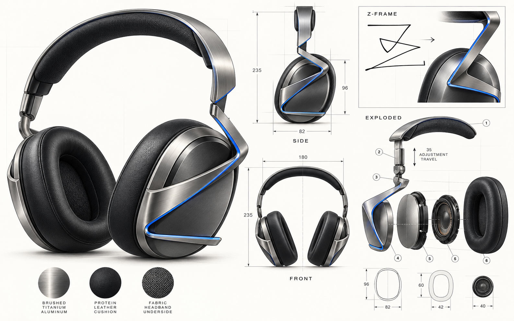
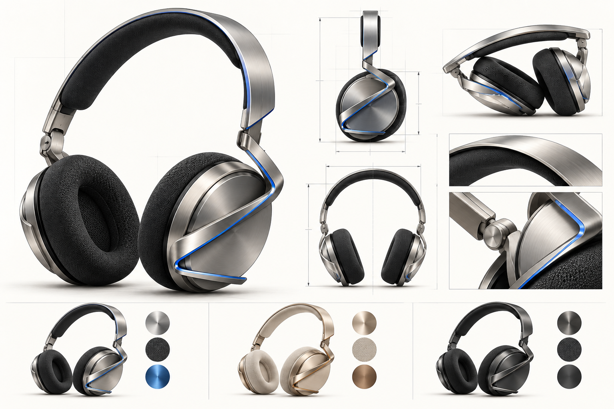
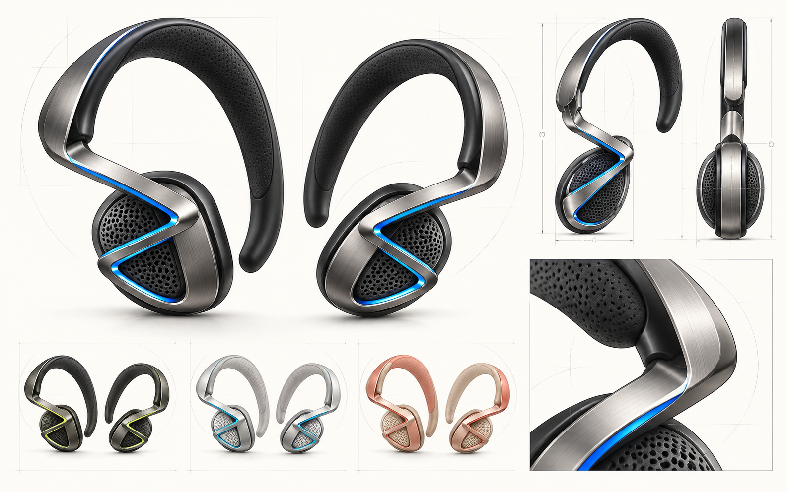
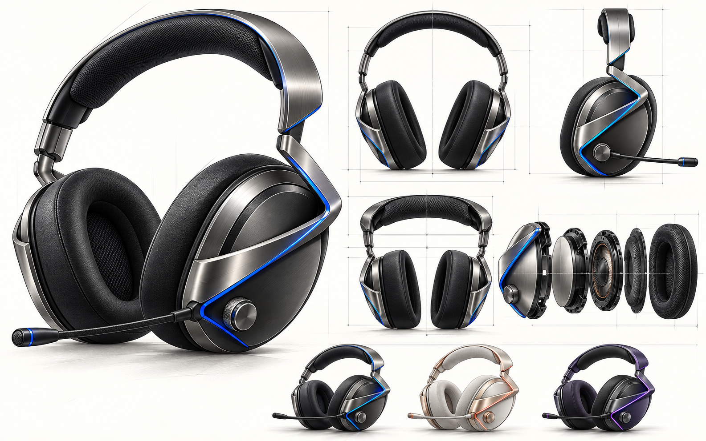

01 / 包耳式旗舰
Z-FRAME PRO
把原始笔迹完整保留在耳罩侧面。
包耳式耳罩、悬浮头梁与外露金属 Z 形骨架构成系列识别核心。适合音乐聆听、通勤与长时间桌面工作。耳罩外缘与支臂之间留出可见的浮空层次，视觉上轻盈，结构上有明确支撑路径。
- 包耳耳垫与织物头梁内衬，接触区域优先考虑可替换。
- 双转轴与伸缩调节方案，目标行程 35 mm，需实测验证。
- 40 mm 动圈单元是设计选型方向，尚未进行声学调校。
钛银·冰蓝曜石黑暖沙金
FROM A SINGLE STROKE
Z-FRAME 把交叉、转折与延伸的手绘笔迹，转译为可识别的耳机支臂。四种佩戴形态，共用同一个设计基因。
概念设计展示 · 所有尺寸与功能均待工程验证

DESIGN DNA
手绘中的上方水平起笔构成悬浮头梁，斜向交叉形成侧面支臂，下方收尾成为耳罩周缘或耳挂的支撑线。线条在不同款式中改变尺度，仍保持同一视觉节奏。
FOUR FORMS / ONE IDENTITY
以下均为外观与结构方向。无线、降噪、续航和声学表现需独立开发测试。
把原始笔迹完整保留在耳罩侧面。
包耳式耳罩、悬浮头梁与外露金属 Z 形骨架构成系列识别核心。适合音乐聆听、通勤与长时间桌面工作。耳罩外缘与支臂之间留出可见的浮空层次，视觉上轻盈，结构上有明确支撑路径。
更细的支臂，更容易放进背包。
把 Z 形外骨架简化为窄金属带，并在头梁连接处引入折叠铰链。造型更克制，适合办公室与日常携带。视觉稿展示的是轻量头戴方向，耳罩大小和压耳/包耳贴合形式应在人体工学样机阶段最终确定。

让折线沿着耳廓生长。
在开放式耳挂上缩小交叉折线，使外侧金属/聚合物弹性臂连接耳挂和声学舱。运动时保留环境感知是这一形态的体验目标；实际稳固性、漏音与防护表现仍需佩戴和实验室测试。

在清晰沟通中保留锋利轮廓。
延续 PRO 的包耳形态，强化 Z 形支臂并加入可拆卸麦克风和实体控制件。目标用户包括桌面创作者、会议使用者与游戏玩家。支臂内侧导光线是视觉提案，具体照明、电池与连接方案尚未定型。

MATERIAL & COLOR
配色以外壳、软包与窄幅强调线组合。以下色值仅用于数字展示，最终颜色需通过材料样板确认。
冷灰金属 + 石墨软包
适合 PRO / LITE香槟金属 + 米色织物
适合 PRO / LITE / MOVE石墨外壳 + 局部蓝/绿线
适合四款珊瑚、铜与深紫点缀
适合 MOVE / STAGECONCEPT TARGETS
这里列的是设计目标与结构方向。图像不是 CAD 出图，任何尺寸都需重新建模与测量。
| 项目 | PRO | LITE | MOVE | STAGE |
|---|---|---|---|---|
| 佩戴形态 | 包耳式头戴 | 轻量可折叠头戴 | 开放式耳挂 | 包耳式麦克风耳机 |
| 声学方向 | 40 mm 动圈目标 | 40 mm 动圈目标 | 开放式定向单元待选型 | 40 mm 动圈目标 |
| 机构重点 | 双转轴、调节行程 | 折叠铰链、轻量支臂 | 耳挂回弹与稳定 | 可拆麦克风、实体旋钮 |
| 重量方向 | 约 280 g 目标 | 低于 PRO 的目标 | 单耳轻量目标 | 约 320 g 上限目标 |
| 优先验证 | 声学、夹力、疲劳 | 折叠寿命、舒适度 | 漏音、佩戴、防护 | 拾音、延迟、兼容性 |
原始 PRO 图上 96 × 82 mm 耳罩外形、60 × 42 mm 耳垫开口、40 mm 单元与 35 mm 调节行程均属概念参考。生成图中的部件编号和投影可能不完全一致，以后续 CAD 图纸为准。
FROM CONCEPT TO SAMPLE